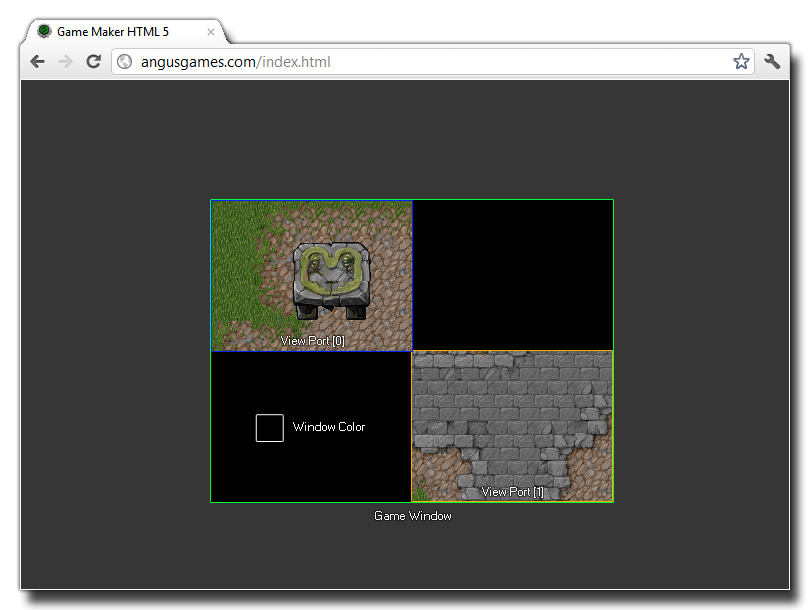

window_set_color(color);
| Argument | Description |
|---|---|
| color | The color to set the region. |
Returns :N/A
This function can set the background color of the game window. This color represents that which will be used for those areas of the game window that are not occupied by any views. The following
image illustrates this:

The above image has two views with two view ports, each one drawn at different positions. This stretches the game window to accomodate both ports and uses the window color to color the background where
no view is shown.
if window_get_color() != c_black
{
window_set_color(c_black);
}
The above code will check the window color to see if it is set as black or not, and if it is not it sets it to black.